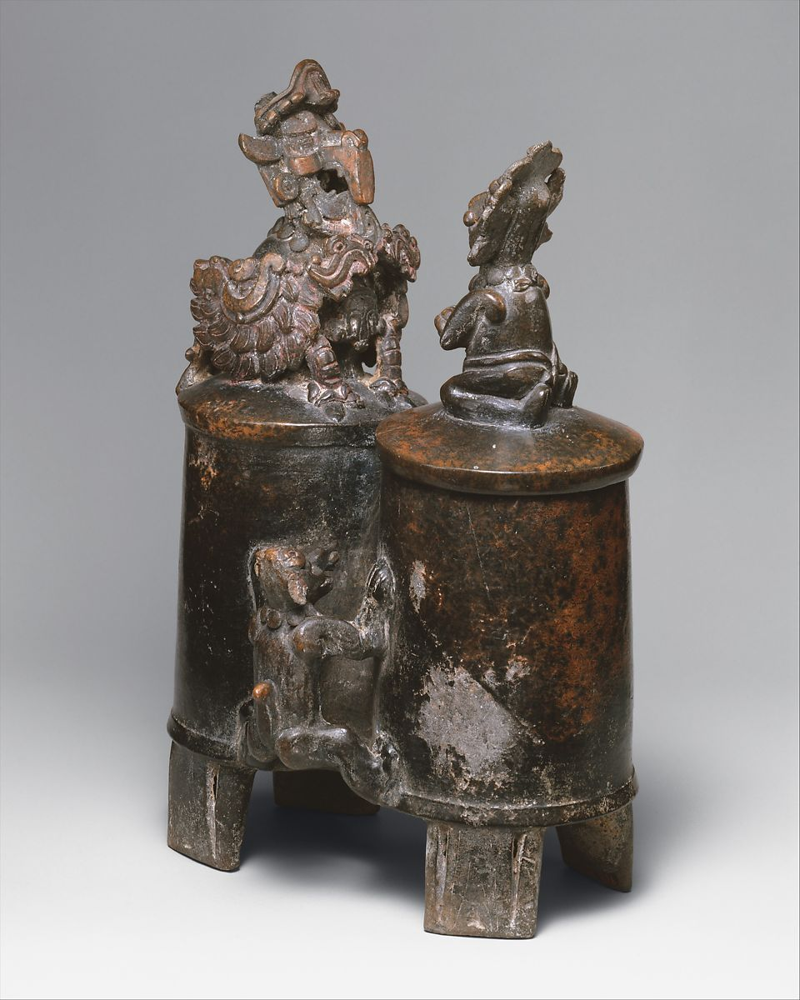

-

- 
Double-Chambered Vessel
5th century
A master Maya potter modeled a vignette with three characters onto the body and lids of this ritual drinking cup. The main form of the vessel is composed of two identical cylindrical chambers, connected by a central hollow bridge, each of which rests on two squarish slab feet. This style of ceramic, recognizable by a very fine reddish or gray paste fired with a reddish-black clay slip is known from the area of what is now northern Guatemala and Southern Campeche, Mexico. Artists who specialized in this blackware style in the 5th-6th centuries achieved great feats in gouged and incised designs, often on very thin walls or lids. Such a fine vessel would have been used on very special feasting occasion, perhaps later buried in the tomb of its owner by his or her descendants.
In this scene, a large supernatural bird known as the Principal Bird Deity (PBD) perches on one lid (which is actually a false lid, fused with the chamber), and faces a kneeling humanlike figure. The bird’s large beak and caruncle protrude from its open mouth, which connects to the interior chamber of the vessel. From the beak hangs a stylized double-headed serpent. The bird’s eyes are square and marked with an L-shaped pupil, a convention that Maya artists used to depict deities with supernatural vision. The spray of feathers of the serpent-wings are modeled and incised, as are the scaley legs and talons. The bird is decked out in jade jewels: a diadem, circular earflares, and a large necklace with central pendant. A kneeling figure on the other removable lid presents the bird with a bundle in devotional tribute. He wears a loincloth, a feathered, jeweled headdress, nose ornaments, ear ornaments, and a necklace. He stares at the bird in reverence, stoic in his encounter with this resplendent being. A feline or simian creature, also wearing a necklace, bridges the two chambers of the vessel and seems to climb up the side towards the two figures on top.
This vessel may be part of a series of three double-chambered blackware vessels featuring different scenes involving the PBD; one was excavated from a tomb at Calakmul, Mexico. Religious narratives from the late first millennium BC until the colonial period feature this creature, which has a large hooked raptor beak grabbing a serpent and animate wings in the form of stylized serpents. Artists depicted the PBD descending from the sky, perching on trees, receiving offerings from humanlike figures, or even being shot by a blowgun.